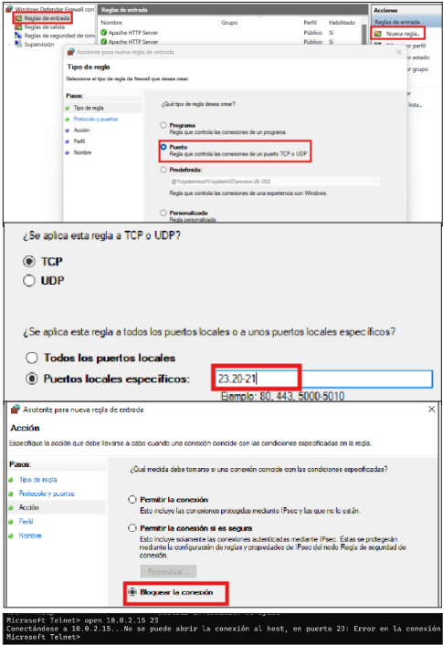
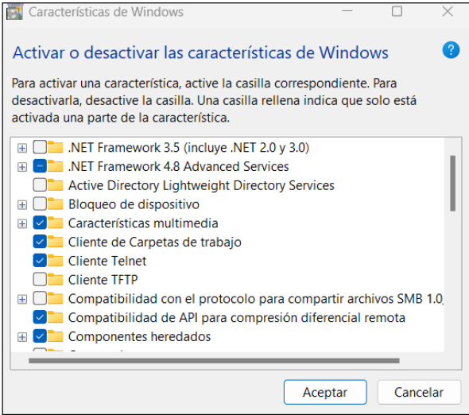
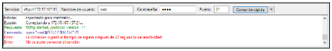
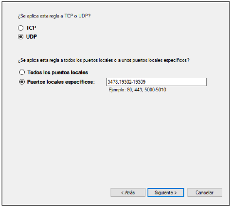

Buscamos firewall y nos metemos en él.
Para ver si podemos entablar conexión con otro host escribimos:
open 10.0.2.15 23Si la conexión no se puede abrir, significa que el otro host lo tiene bloqueado.
Firewall Windows - Configuración avanzada - Reglas de Entrada/Salida.
Vamos al panel de control y a programas
Activar o desactivar las características de Windows.
Buscamos cliente telnet, seleccionamos y aceptar.
Una vez aceptamos ya podríamos meternos a telnet.
Para comprobar FTP, hemos instalado FileZilla y desde ahí hemos ido haciendo la comprobación.
Seleccionamos UDP y le ponemos 3478, 19302-19309.
El 3478 es para bloquear el audio y el 19302-19309 es para bloquear el video.
Así bloqueamos Meet sin bloquear el puerto 443.